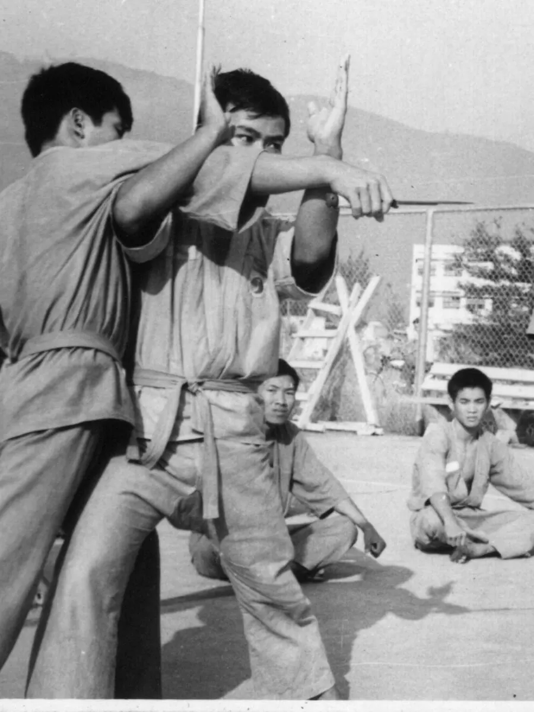
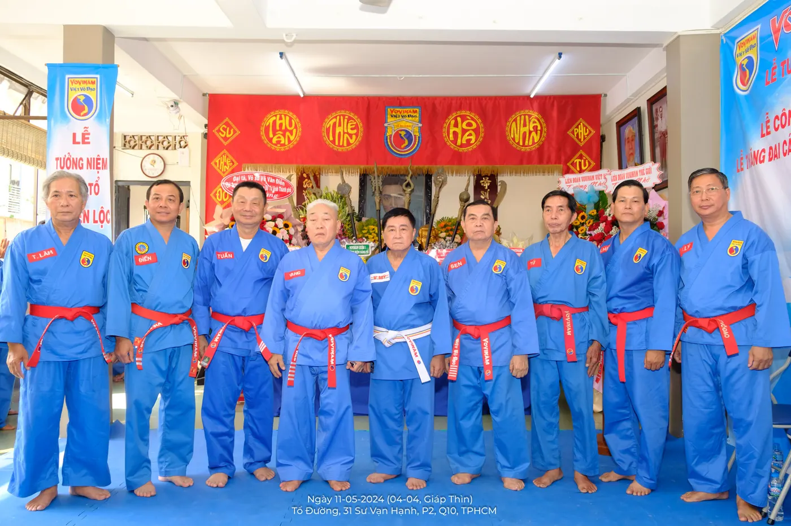

Art martial vietnamien — Depuis 1938
Des arts martiaux millénaires du Vietnam à une discipline pratiquée dans plus de 60 pays — l'histoire d'un peuple, d'un fondateur et d'une vision.

Võ cổ truyền — Arts martiaux traditionnels du Vietnam
Le Vietnam est un pays qui s'est construit dans la résistance. Face aux invasions chinoises, à la colonisation française et aux guerres du XXe siècle, son peuple a développé une culture martiale enracinée dans le quotidien — se battre n'était pas un sport, c'était une nécessité de survie.
De cette histoire est né le Võ cổ truyền, l'ensemble des arts martiaux traditionnels vietnamiens. Pas un système unique et centralisé, mais une mosaïque de styles régionaux, transmis de maître à disciple dans la confidentialité, ce qui en fait un patrimoine à la fois riche et diversifié. On y trouve la lutte villageoise, les frappes à mains nues, les projections, et le maniement des armes traditionnelles comme le bâton ou le sabre.
La géographie a façonné les styles : au Nord, plus exposé aux invasions, les arts martiaux sont codifiés et travaillés en formes complexes ; au Centre et au Sud, ils sont plus directs, influencés par les cultures Cham et Khmer.
Dans ce paysage, la province de Sơn Tây occupe une place à part — ancienne capitale royale, carrefour de fleuves et de cultures. C'est là que naît en 1912 Nguyễn Lộc, le fondateur du Vovinam. Il grandit dans un Vietnam sous occupation française depuis le traité de 1884, au sein d'une jeunesse qui cherche à la fois à résister et à se réinventer. C'est sur ce terreau — patrimonial, politique et humain — qu'il va construire un art martial nouveau.
1912 – 1960 · Fondateur du Vovinam Việt Võ Đạo
Nguyễn Lộc grandit à Hanoï sous occupation française. Il aurait pu, comme beaucoup de jeunes de sa génération, se laisser emporter par l'occidentalisation qui transformait alors la société vietnamienne. Il choisit autre chose. Il appelle ça la Cách mạng tâm thân — la révolution du corps et de l'esprit. Pas une révolution politique, mais une voie personnelle : construire un corps fort et un caractère droit pour servir quelque chose de plus grand que soi.
À partir de là, il étudie les arts martiaux existants. Il observe ce qui fonctionne, ce qui correspond à la morphologie et à la psychologie vietnamienne. Il prend les arts martiaux et la lutte traditionnelle vietnamienne comme base, et construit quelque chose de nouveau. En 1938, il juge son système suffisamment abouti pour l'enseigner. Discrètement d'abord, à une poignée d'amis au 65, rue Gia Long à Hanoï.
En automne 1939, il sort de l'ombre. Une démonstration publique au Grand Théâtre de Hanoï. Le public est conquis, le bouche-à-oreille fait le reste. Dès le début 1940, les cours s'ouvrent officiellement à l'École normale de Hanoï, à l'invitation du docteur Đặng Vũ Hỷ. Les jeunes affluent — étudiants, fonctionnaires, ouvriers. Le Vovinam leur offre non seulement des techniques efficaces, mais une éthique.
En 1942, les autorités coloniales françaises ferment les cours après des affrontements entre étudiants vietnamiens et français. Nguyễn Lộc continue dans la clandestinité, enseigne chez lui rue Chancheaume. En 1945, quand le Japon renverse l'administration française, le Vovinam retrouve sa liberté. Nguyễn Lộc forme des unités de défense nationale, envoie ses élèves dans toutes les provinces du Nord.
Après la partition du pays en 1954, il descend à Saïgon avec peu de monde. Il recommence presque à zéro, ouvre un dojo rue Thủ Khoa Huân. La maladie le rattrape fin 1957. Il confie la direction des cours à son premier disciple, Lê Sáng. Le 29 avril 1960, il meurt à 48 ans.
« Continuer à développer le Vovinam, et former une jeunesse animée par les valeurs du võ đạo — non seulement pour le Vietnam, mais pour l'humanité entière. »Nguyễn Lộc — Sa dernière volonté confié à Lê Sáng
Il n'avait laissé aucun document écrit. Il avait délibérément brûlé tous ses écrits, pour éviter que ses élèves ne les traitent comme une vérité gravée dans le marbre et cessent d'innover.
Dates clés
1920 – 2010 · Chưởng môn du Vovinam Việt Võ Đạo
Lê Sáng est né en 1920 à Hanoï, d'une famille originaire de Thanh Hóa. Enfant, il a des problèmes aux jambes. Sa mère lui conseille de pratiquer un art martial pour se renforcer. En 1940, il entre dans la classe de Nguyễn Lộc à l'École normale. Il a du talent, de la régularité, et une capacité de travail peu commune. En quelques années, il devient le principal assistant de son maître.
Après la mort de Nguyễn Lộc, il prend les rênes. Ce n'est pas une succession facile. Entre 1961 et 1963, le régime de Ngô Đình Diệm interdit toutes les écoles d'arts martiaux. Lê Sáng survit en se cachant dans des salles de classe privées, gérant une plantation de caoutchouc à Buôn Ma Thuột en attendant que les conditions changent. Quand le régime tombe en novembre 1963, il revient immédiatement à Saïgon.
En 1964, il rouvre le Centre de formation Vovinam (Trung tâm Huấn luyện Vovinam) au 61, rue Vĩnh Viễn. Il rédige le Règlement de la discipline (Qui lệ), structure le programme de formation sur plusieurs niveaux, définit un système de grades par couleur de ceinture, et formule les Dix principes (điều tâm niệm) du pratiquant qui sont des engagements moraux aussi importants que les techniques.
À partir de 1966, il obtient du ministère de l'Éducation l'introduction du Vovinam dans les lycées publics de Saïgon dans le cadre du programme Học đường mới. En quelques années, des dizaines d'établissements dans tout le Sud ouvrent des sections.
Après 1975, le pays unifié traverse des années difficiles. Lê Sáng reprend le travail dans des conditions bien plus contraintes, reconstituant les clubs un par un, formant de nouvelles générations. Il vivra seul, sans famille propre, consacrant tout à la discipline. Il écrit, compose des poèmes — une âme d'artiste dans un corps de combattant. Il révise et enrichit le système technique jusqu'à un âge avancé.
Le 31 mars 2010, quelques mois avant sa disparition, Chưởng môn Lê Sáng prit soin d'assurer la continuité et la gouvernance du Vovinam en instituant deux organes distincts.
D'un côté, le Hội Đồng Võ Sư Tương Trợ Hải Ngoại (Conseil des Maîtres d'Entraide à l'Étranger), composé de maîtres établis hors du Vietnam, avec pour mission de maintenir le lien entre les communautés Vovinam de la diaspora, de soutenir l'enseignement technique et de favoriser les promotions de grades à l'étranger.
De l'autre, le Hội Đồng Võ Sư Chưởng Quản (Conseil des Maîtres Dirigeants de l'École), annoncé publiquement le 24 août 2010 au Tổ đường. Cet organe assume la direction spirituelle et administrative du style au Vietnam.
En créant ces deux structures complémentaires avant de rejoindre le fondateur Nguyễn Lộc dans la voie de l'éternité, Chưởng môn Lê Sáng garantissait que ni la diaspora ni le pays d'origine ne seraient laissés sans cadre directeur légitime.
Le 27 septembre 2010, il meurt à 91 ans, quelques semaines avant que le Vovinam fasse son entrée aux Jeux d'Asie du Sud-Est à Jakarta.
Dates clés
Hội Đồng Võ Sư Chưởng Quản — la direction actuelle de l'école

Depuis 2010, le Vovinam n'a plus de Chưởng Môn. L'école est dirigée par le Hội Đồng Võ Sư Chưởng Quản, le Conseil des Maîtres Dirigeants de l'École. D'après son règlement, publié par Lê Sáng le 31 mars 2010, c'est l'organe le plus élevé de l'école : il la dirige selon ses 3 buts et ses 5 principes directeurs. Son chef porte le titre de Chánh Chưởng Quản.
Lê Sáng a nommé le Grand Maître Nguyễn Văn Chiếu (1949 – 2020) premier Chánh Chưởng Quản, chargé de diriger l'école au Vietnam et à l'étranger. En parallèle, il a créé le Conseil des Maîtres d'Entraide à l'Étranger, composé au départ de cinq membres, pour relier les activités de l'école hors du Vietnam.
Après le décès de Nguyễn Văn Chiếu, le 4 février 2020, le Conseil a perdu deux autres membres : Mai Văn Hiệp (1952 – 2021) et Nguyễn Tôn Khoa (1950 – 2022). Il ne comptait plus que six membres : Nguyễn Văn Sen, Nguyễn Văn Sáng, Trần Văn Mỹ, Võ Văn Tuấn, Trần Đa et Nguyễn Chánh Tứ. Malgré de nombreuses réunions pendant quatre ans, aucun nouveau Chánh Chưởng Quản n'avait pu être élu.
En avril 2024, le Conseil s'est renforcé. Le 3 avril, ses six membres ont élu trois membres titulaires, Vũ Văn Điền, Võ Hữu Lý et Võ Thành Lâm, ainsi qu'un membre suppléant, Nguyễn Hoàng Hiệp. Le 28 avril, réuni au Tổ đường, il a élu au scrutin secret, par 9 voix sur 9, Võ Sư Trần Văn Mỹ comme Chánh Chưởng Quản. Cinq anciens de l'école avaient été invités pour surveiller le vote.
L'élection a été annoncée officiellement le 11 mai 2024, lors de la cérémonie du 64e anniversaire de la disparition du Fondateur Nguyễn Lộc. Né le 22 décembre 1951, Trần Văn Mỹ pratique le Vovinam depuis 1965, au dojo du 61 rue Vĩnh Viễn, sous la direction de Lê Sáng. Hồng Đai Đệ Tứ Cấp (8e Đẳng), il était Chánh Sự permanent du Conseil depuis juin 2022, et il est aussi vice-président de la Fédération mondiale de Vovinam. Il porte désormais la ceinture de grand dirigeant de l'école : blanche, avec trois fils bleu, jaune et rouge au centre.
Dates clés
Sources : notice officielle du Hội Đồng Võ Sư Chưởng Quản du 11 mai 2024 (n° 02/TB/HĐVSCQ/2024), publiée sur le blog Học Võ Vovinam ; page vietnamienne de Wikipédia sur le Vovinam ; site Vovinam Việt Võ Đạo Italia (page consacrée au Grand Maître Nguyễn Văn Chiếu).
Venez tester sans engagement — tenue souple de sport et une bouteille d'eau suffisent, aucun équipement requis.